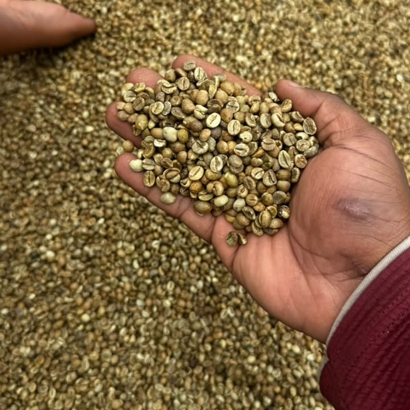
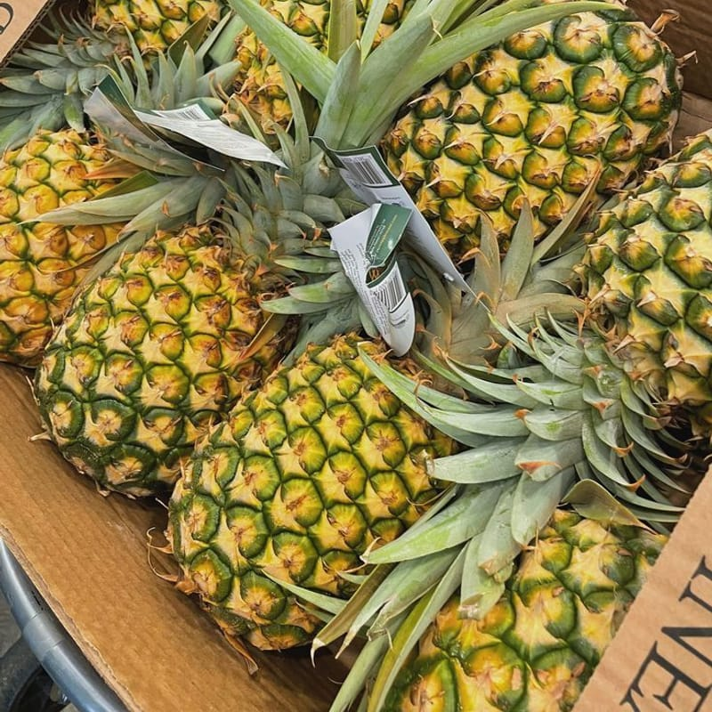
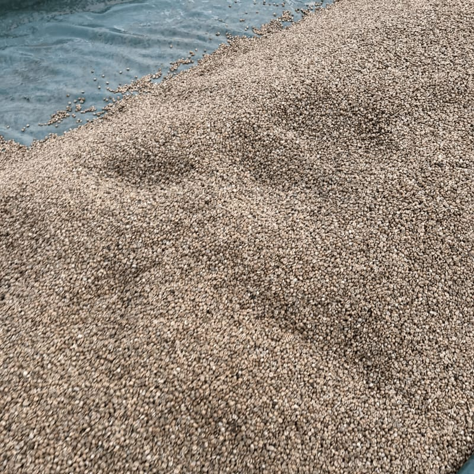
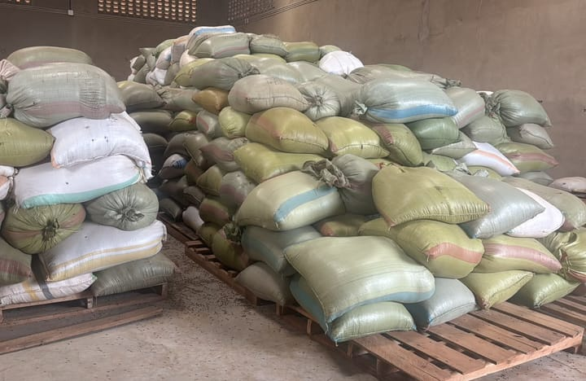

Why does Ugandan produce taste so good?
Discover our produce's journey from farm to market.
Growing
It's in our soil
Our partner farmers grow coffee, fruits and vegetables in Uganda's fertile soils.
Two rainy seasons and high-altitude regions give Ugandan farmers ideal growing conditions.
Many farmers mulch and intercrop to keep moisture in the soil.
2030
We help farmers harvest at the right time for the best quality.
Our team shares the quality standards international buyers expect.
The variety and region shape the flavour of every coffee and the size and taste of every fruit.
Each region suits different crops.
Healthy crops.
Farmers look after their plants so they stay healthy and productive.
Harvest and seasonality.
We plan harvests with farmer groups so produce is ready at the right time of the year.
Soil and climate conditions.
We source each crop from the regions whose soil and weather suit it best.
2049
We work to reduce losses between farm and port.
Good drying, sorting and packing mean more of every harvest reaches export quality.
Our products
Every grade has a market
We match each grade of produce to the buyers who need it.
Managing Director accountable for the strategic direction, growth, and operational excellence of Triport Agro International Limited.

Micah Bamutura
Managing Director & Founder at Triport Agro
Origins
Rich growing regions
Ugandan produce comes from some of Africa's richest growing regions.

Coffee, fruits and vegetables grow side by side on many smallholder farms.
Each region brings its own character to what it grows.

Mount Elgon
Eastern Uganda
The volcanic slopes of Mount Elgon produce Bugisu Arabica, known for its bright acidity and full body.

Rwenzori Mountains
Western Uganda
The foothills of the Rwenzori Mountains grow Arabica with fruity, complex flavours.

Central Uganda
Western Uganda
Central Uganda is Robusta country, and also grows pineapples, bananas and vegetables for export.
Farmers protect their crops with careful field practices.
Healthy farms produce healthier harvests.

Healthy farms produce healthier harvests.
Transport
From us to you
We provide consistent quality Ugandan produce, season after season.

We use the most efficient routes to ship our products to buyers worldwide.
95%
Coffee and grains travel by sea; premium fresh produce can fly.
Sustainable packaging
Coffee travels in jute or GrainPro-lined bags, and fresh produce in ventilated cartons on palletised cold-chain loads, with private-label options on request.
Efficient transportation
Containers leave through the port of Mombasa, while air freight from Entebbe brings fresh produce to market within days of harvest.
Community Support
Giving back
We care about the wellbeing of the farming communities we work with.
Direct partnerships give farmers a reliable buyer and a fair price for quality.

Supporting smallholders
Across Uganda, we work with local farmers to improve the quality of their produce and facilitate access to international markets through our networks. This creates sustainable businesses from which communities grow and develop.
Fair prices
We agree prices and quality specifications up front and pay transparently, so farmers can plan with confidence.
Farmer training
We share practical guidance on harvesting, drying, sorting and grading, helping more of every harvest meet export standards.
Our Purpose
Connecting farmers to the world
So next time you enjoy Ugandan coffee or fruit, think about this story.
Our purpose is inspired by our founder, Micah Bamutura: to connect Ugandan farmers with premium international markets.
Micah Bamutura
Managing Director & Founder at Triport Agro
Learn more about our company.
Learn about our story
Triport Agro was founded in Kampala to connect Ugandan farmers to the world.
Discover our story
Buy our products
We offer quality products, season after season. We are a trusted supplier of Ugandan coffee, fresh produce and grains.
Buy our products
Our coffee
Uganda grows both Arabica and Robusta. Get to know the coffees we export.
Discover our coffee